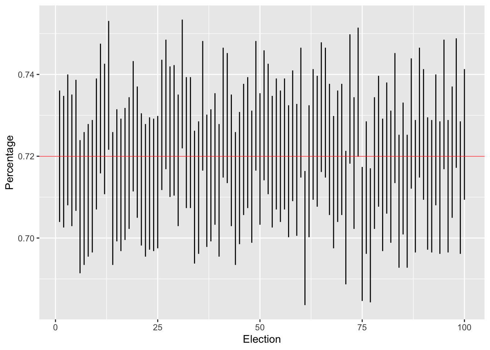

We now leave the munificent world of probability and trek into the barren and unsettling land of statistics, where we can’t assume that we can generate as much data as we want. For most studies, more samples means more money, so ideally a dataset can make a strong statement without being too large.
In this section, we will show the usefulness of the central limit theorem applied to polling. Let’s imagine an ice cream company is polling people for their preference of vanilla versus chocolate.
How much more (or less) popular is vanilla ice cream to chocolate? Let’s imagine we asked 100 people this question. We’ll generate data by
n = 100
vanpct = .7
votes = rbinom(n, 1, .7 )However, let’s act like we have no idea where this dataset came from (in particular, we will pretend to not know the actual value of \(p\)).
This is a binary vector (consisting of 0’s and 1’s). The 1’s correspond to “vanilla”, and the 0’s for “chocolate”. We can find the percentage of vanilla voters by simply taking the sample mean
xbar = mean(votes)
xbar## [1] 0.67We will denote this quantity as \(\bar X = \sum X_i/n\). This quantity is our best guess for the true population proportion \(p\), if we asked every person in the world what their preference is.
So if \(\bar X > .5\), then we’re done, right? Not quite, unfortunately. It’s true that in this one poll vanilla is the preferred flavor, but perhaps our random sample is not representative of the larger population of ice cream consumers. Ideally, we’d like to figure out how confident we are about our single poll.
This will require a computation which will incorporate the central limit theorem. Previously, we showed that
\[\begin{equation} (S_n- p n)/(\sqrt{n}\sigma) \approx Z_{0,1}, \end{equation}\]
where \(Z_{0,1}\) is the standard normal random variable. We can message this a bit: if we multiply and divide the left hand side by \(n\), we get
\[\begin{equation} n(1/n)(S_n- p n)/(\sqrt{n}\sigma) = n\cdot(S_n/n- p )/(\sqrt{n}\sigma) = \sqrt n(\bar X_n-p)/\sigma \end{equation}\]
This is in a better form since it includes our sample mean \(\bar X_n\). Since we’ve only multiplied by one, the right hand side of the above equations also has a distribution that’s approximately the same as \(Z_{0,1}\).
The point of using this expression is that it helps us answer the following question regarding fluctuations from the mean:
If the true proportion of voters is \(p\), then what’s the probability that the sample proportion is more than \(\epsilon\) (say 5%, or 1%) away from \(p\)?
If other words, our task is to write a useable expression for
\[\begin{equation} \mathbb P (|\bar X- p| \le \epsilon) = \mathbb P (\bar X\le \epsilon+ p)- \mathbb P(\bar X < p- \epsilon). \end{equation}\]
For the two probabilities above, let’s subtract \(p\) and multiply by \(\sqrt{n}/\sigma\) on both sides of the inequalities, we then get
\[\begin{align} \mathbb P (\bar X\le \epsilon+ p)- \mathbb P(\bar X < p- \epsilon ) \\ = \mathbb P ((\bar X- p)\sqrt{n}/\sigma \le\epsilon \sqrt{n}/\sigma)- \mathbb P((\bar X -p )\sqrt{n}/\sigma < -\epsilon \sqrt{n}/\sigma ) \\ \approx \mathbb P (Z_{0,1}\le \epsilon/SE(\bar X))- \mathbb P (Z_{0,1}< -\epsilon/SE(\bar X)) \end{align}\]
Here we used \[\begin{equation} SE(\bar X) = \sigma/\sqrt n \end{equation}\] to denote the standard error of \(\bar X\). So now everything is written in terms of \(Z_{0,1}\). The upshot is that, regardless of what random variable we begin with, our calculation boils down to calcluating probabilities regarding the standard normal.
In the clean world of probability, we have an exact expression for what \(SE(\bar X)\) is. It is given by \[\begin{equation} SE(\bar X) = \sqrt{p(1-p)/n} \end{equation}\]
There is a major problem with this, however: we don’t know what \(p\) is! This is the point of this whole exercise in the first place! This isn’t such a disaster, thankfully, since we can simply estimate this quantity with a plug in estimator, where we just replace \(p\) with our best guess, which in our case is simply \(\bar X\). This gives us the estimate
\[\begin{equation} \widehat {SE}(\bar X) = \sqrt{\bar X(1-\bar X)/n} \end{equation}\]
Getting back to our equation: we have that
\[\begin{equation} \mathbb P (|\bar X- p| < \epsilon) \approx \mathbb P (Z_{0,1}\le \epsilon/\widehat{SE}(\bar X))- \mathbb P (Z_{0,1} < -\epsilon/\widehat{SE}(\bar X)) \end{equation}\]
Q: Why the “approximate” sign? There are in fact two reasons.
Let’s plug all of this into R. We’ll set our \(\epsilon = .02\) and also compute the estimate for the standard error:
eps = .02
se = sqrt(xbar*(1-xbar)/n)
se## [1] 0.04702127So then the probability that our estimate is with 2% is then given by
\[\begin{equation} \mathbb P (|\bar X- p| < .02) \approx \mathbb P (Z_{0,1}\le .02/\widehat{SE}(\bar X))- \mathbb P (Z_{0,1}\le -.02/\widehat{SE}(\bar X)) \end{equation}\]
In R, this is given by
pnorm(eps/se)- pnorm(-eps/se)## [1] 0.3294107Here, we used the function pnorm, which computes the cumulative probability for the standard normal.
Q: What happens when we let \(\epsilon\) get larger? Smaller?
Now let’s flip arguments by supposing that after you ran your poll, you want to create a wide enough estimate around \(\bar X\) so that most of the time in contains \(p\). In other words, we’d like a desired probability \(\beta\) such that
\[\mathbb P (|\bar X- p| \le \epsilon) = \beta\]
Let’s fix a desired value for \(\beta\), and now rewrite the argument inside as a probability the \(p\) is inside a certain interval, which we call the :
\[\begin{equation} |\bar X- p| \le \epsilon\Longleftrightarrow\bar X-\epsilon \le p \le \bar X +\epsilon \Longleftrightarrow p \in [\bar X-\epsilon, \bar X +\epsilon]. \end{equation}\]
Thus, any confidence level \(\beta\) is going to create a confidence interval given in the above equation. As \(\beta \rightarrow 1\), should my interval get bigger or smaller?
Philosophical aside: A general principle of statistics (and life) is that the less remarkable of a claim you make, the more likely that it is true. For instance, which of the following two claims is more likely to be true:
Claim A: The next thunderstorm will occur this upcoming Friday at 4:23 pm.
Claim B: The next thunderstorm will occur some time next year.
So the point here is that if you’re running a poll with limited data, the less specific your claim is, the better chances that you’re correct. Right now, you’re stuck with a best guess for \(p\), given by \(\bar X\). Which of these is more likely:
Claim A: \(p\) is between \(\bar X - .00001\) and \(\bar X +.00001\)
Claim B: \(p\) is between \(\bar X -1\) and \(\bar X+1\).
You can actually pinpoint how big your interval should be if you want to be correct with a frequency of \(\beta\). So let’s say you want 95% confidence, meaning that the true parameter would appear in your interval 95% of the time if you ran your experiment many times. Then you’d have
\[\begin{equation} \mathbb P (Z_{0,1}\le \epsilon/\widehat{SE}(\bar X))- \mathbb P (Z_{0,1}\le -\epsilon/\widehat{SE}(\bar X)) = .95 \end{equation}\]
One can show, really through just plugging in values and seeing what works, that this occurs for
\[\begin{equation} \epsilon = z^{*}_{.95}\cdot \widehat{SE}(\bar X), \quad z^{*}_{.95} = 1.96 \end{equation}\]
And it’s just that simple folks! Your 95% confidence interval is then
\[\begin{equation} [\bar X - 1.96 \widehat{SE}(\bar X), \bar X + 1.96 \widehat{SE}(\bar X)] = \bar X \pm 1.96 \widehat{SE}(\bar X). \end{equation}\]
For each confidence level \(\beta\), my value of \(z^*_\beta\) will change. Some popular values are
\[z^*_{.8} = 1.28 , \quad z^*_{.9} = 1.65, \quad z^*_{.99} = 2.58.\]
It should make sense that as our demands get stronger, our confidence interval should grow.
For our example, the 95% confidence interval for \(p\) is given by
conflow = xbar-1.96*se
confhigh = xbar +1.96*se
c(conflow, confhigh)## [1] 0.5778383 0.7621617One last point: when doing a poll, we’re often more interested in the spread. If Candidate A has 45% and Candidate B has 55%, then the spread is \(.45-.55 = -.1\). In general, if Candidate A has a fraction \(p\) of the vote, then candidate B has a fraction \(1-p\), and the spread is \(p- (1-p) = 2p-1\). If our best guess for \(p\) is \(\bar X\), then certainly our best guess for the spread is \(2\bar X-1\). The factor of two will cause our confidence interval to be twice as large.
(Question: what about the -1 term? Shouldn’t that cause a change in the confidence interval too?)
Last section, we really dove into the weeds, and dug up the following for guessing a candidate’s percentage \(p\) after polling \(n\) people. Our findings:
Now is a good time to drill away at the idea of a confidence interval. This interval is a keystone of what’s called frequentist statistics . This philosophy states that what you’re trying to find (polling percentages, masses of atoms, average sugar content in a soda) exists, and there’s nothing random about it. You, the mortal statistician, can only dip your toes in the ocean of truth belonging to parameters.
There is a great deal of subtlety with interpreting a confidence interval. The following statement regarding a 95% confidence interval is very commonly uttered:
The parameter \(p\) has a 95% probability of landing in my confidence interval.
This is, unfortunately, wrong! There is nothing random about \(p\)!
Wrong idea: Generate some confidence interval. If the experiment is run many times, \(p\) will land in the confidence interval 95% of the time.
Right idea: \(p\) is fixed. For every poll run, we will obtain a 95% confidence interval. Out of all of these intervals, 95% of them will contain the true parameter \(p\).
Imagine \(p\) living in Valhalla in the valley of the gods. We finite mortals can only poke at what \(p\) is with our flimsy, noisy, finite data. A 95% confidence interval provides us with the comfort that if we were to run our experiment many times and compute a confidence interval for each experiment, then 95% of our intervals would contain this fixed value \(p\).
Now let us imagine that Parameter Valhalla has allowed us to peek, and let us know for sure what \(p\) is. Loki from the clouds declares
Behold! The true value of p is .72.
In fact, Loki has even provided us with a vote generator, the rbinom function we have been using in the probability section. With this generator, let’s simulate 1000 elections, each of which polls 300 people. Let’s confirm that about 95% of the confidence intervals we generate contain our true value \(p = .72\).
#Our actual parameter value
p = .72
numelections = 100
votes = 3000
#Votes in each election
elections = rbinom(numelections, votes, p)Our 100 different estimates for \(p\) (1 estimate for each poll) is given by
#It's p_hat, not phat
p_hat = elections/votesAnd now our confidence intervals are provided by
se = sqrt(p_hat*(1-p_hat)/votes)
conflow = p_hat-1.96*se
confhigh = p_hat+1.96*seThe percentage of confidence intervals which contain the true parameter is then
print(sum( (p > conflow) & (p<confhigh))/numelections)## [1] 0.95Note that we’re not going to get exactly 95 %. Confidence intervals are random objects, and the statement of coverage provided by a confidence interval is probabilistic. What is true, by the law of large numbers, is that if we ran more and more polls, then the percentage of confidence intervals containing \(p\) would indeed converge to .95.
We can also plot all of our confidence intervals at once to see how they vary from poll to poll.
Conftest = data.frame(p_hat, conflow, confhigh, 1:numelections)
colnames(Conftest) = c('P_hat', 'Percentage', 'Upper', 'Election')
Conftest %>% ggplot()+
geom_segment(aes(x = Election, y = Percentage,
xend = 1:numelections, yend = Upper))+
geom_hline(yintercept = p, color = 'red', size = .2)
Q: Tinker around with the variables. What happens to confidence intervals as we increase or decrease (a) the population size, (b) the level of confidence?